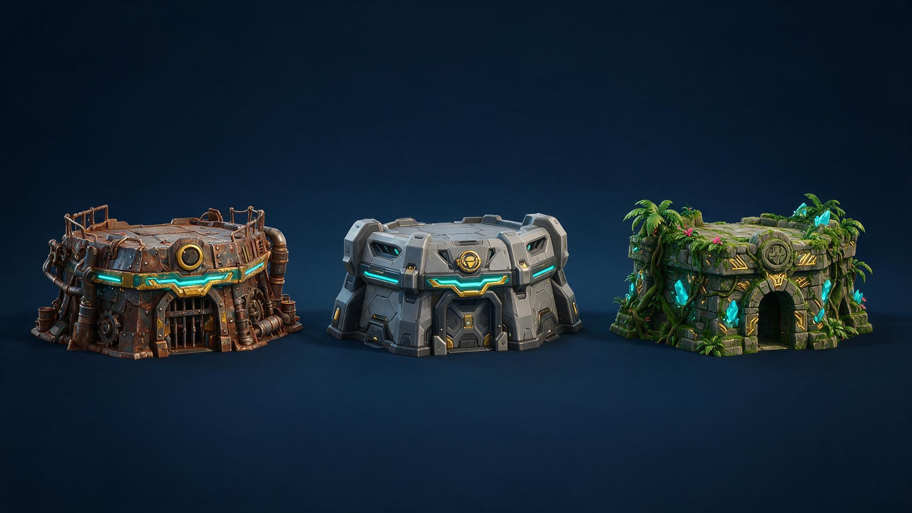
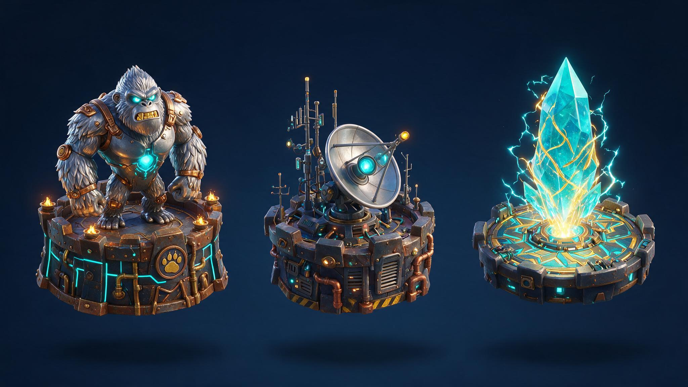
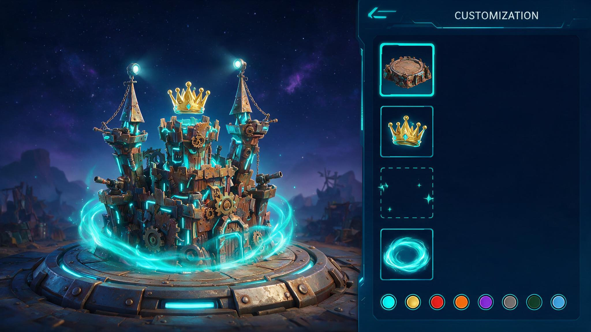
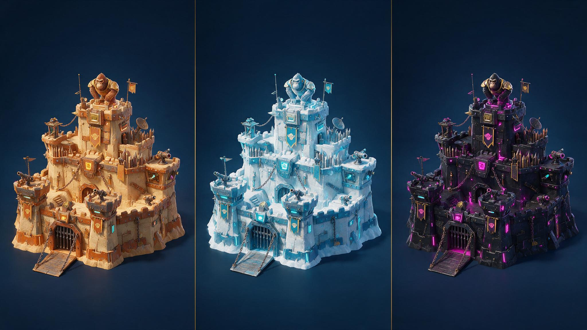
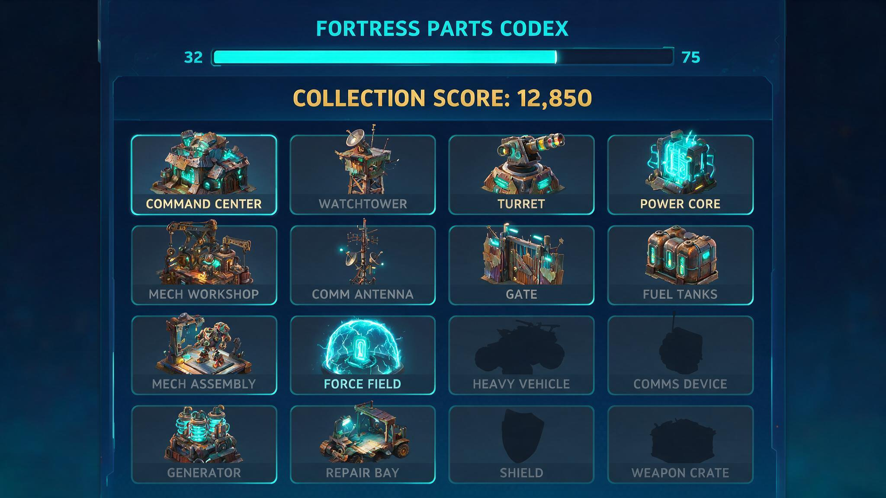

外观品类做到最深的形态不是「一套一套地卖皮肤」，而是把一套皮肤拆成若干可独立购买、可自由组合、永不过期的部件。 这个范式在《堡垒之夜》的衣柜（Locker）体系上跑了近十年：角色皮 / 背饰 / 镐 / 滑翔伞四个槽位固定不变， 内容每期换，玩家自己搭配。它成立的原因不是画得好看，而是一条结构性质： 第 N 期的新件会给前 N-1 期的旧件重新赋予价值，所以旧的付费不会因为新内容上线而贬值。
| 范式位置 | 《堡垒之夜》衣柜 | 本案《万象主城》 |
|---|---|---|
| 售卖单位 | 单件（皮 / 背饰 / 镐 / 滑翔伞）独立售卖 | 单件（城基 / 城冠 / 城辉 / 色板）独立售卖 |
| 组合权 | 槽位固定，玩家自由搭配 | 4 槽固定，玩家自由搭配 |
| 旧件是否过期 | 永不过期，永久留在衣柜 | 永久保留，且额外计入收藏度 |
| 新内容对旧件 | 新件给旧件增加搭法 | 同；且新色板可直接施加到全部旧件上 |
| 展示载体 | 角色（对局中被他人看见） | 主城（自己每天必看 + 被侦查 / 被攻打 / 联盟来访时被看见） |
| 本案独有的起点 | — | 不是从零起步：项目已有 124 张主城皮肤存量资产， 可整体接入这一层（见 §14.1） |
⚠ 这里做的是结构类比（售卖单位与组合关系），不是玩法类比。本案不引入任何对局玩法。
以下为 1312 city_skin / 1388 city_suit_module / 1389 city_suit 三表逐行实测（2026-08-17 拉取）， 可复核；营收类数字口径见 §2.3 与下方口径纪律。
① 本案只引用两类数据：配置表结构清点（1312 / 1388 / 1389 逐行实测，任何人可复核）； 以及已对齐团队官方回归报告的大盘 / 节日营收（毛额 + 真实档期 + 剔异常单，校验偏差 ≤1.70%）。 ② 本案不引用「主城外观品类」的专项营收数字 —— 该品类尚未做过独立回归，用未校验的数字论证等于送靶子； 品类营收回归已列入 §16.3 待办。 ③ 不使用任何「参与度 / 时长 → 付费」的因果论证：付费本身会拉长参与，因果双向，不能倒推。 付费理由在 §14.3 用具体消费场景独立论证。 ④ 「组合数」与「可售单位数」是两个口径，全文不混用：组合数只用来描述体验感知， 付费深度一律只看可售单位数（见 §11.3）。
| 它是 | 它不是 |
|---|---|
| 已有主城外观品类之上的一层装配与累积结构 | 不是一个新玩法 —— 没有关卡、没有战斗、没有新规则引擎 |
| 常驻系统，跨节日永久存在，每期只换内容 | 不是某一个节日活动，不占节日主题位 |
| 节日主城套装的承接层 —— 节日套装照做不减，做完接进来继续有用 | 不是节日主城套装的替代品（见 §14.1） |
| 纯外显 + 收藏向 | 不改变任何战斗力可达性（数值口径见 §8.3） |
三个条件同时具备：
A_INT_dyeing_skin 字段已上线并跑过真实内容
（2024 圣诞高级皮肤做到过「一皮四色」），但 2026 年新增使用为 0。三轴里的一整轴不需要新造轮子。A_ARR_items 本来就是定长 5 槽数组
—— 2026 拓荒节因为没有侧挂件，那一位直接填了 0 占位。从「槽位填死 id」到「槽位可选玩家拥有件」
是同一结构的扩展，不是推倒重来（见 §16.1）。⚠ 口径区分：本节清点的是主城外观品类的配置存量；§2.3 第四条引用的是全项目活动族的营收趋势。两者用途不同，不可混用。
| 表 | 承载什么 | 存量 | 结构特征 |
|---|---|---|---|
| 1312 city_skin | 主城皮肤本体（城堡模型） | 124 行 | 品质分布 q3=57 / q4=37 / q5=18 / q2=7 / q0=5。q5 即现有最高档，行内注释已在用「璀璨」一词 |
| 1388 city_suit_module | 套装挂载件（侧挂 / 顶挂 / 特效） | 20 行 | C_INT_type 仅 1 / 2 / 3 三值，对应两个实体位 + 一个特效位 |
| 1389 city_suit | 套装定义（哪几件算一套） | 7 套 | A_ARR_items 定长 5 槽，A_INT_suit 指向集齐后的最终形态 |
七套主城套装（2025 科技节、2025 深海节、2025 周年庆、2025 星球、2026 战地、2026 拓荒节、2026 周年庆）
结构完全一致：两张皮肤 + 两个实体挂件 + 一个特效 = 5 件，集齐触发最终形态。
2026 拓荒节因为美术只给了「巨龙 + 特效」两件，第 4 槽直接填了 0 占位 —— 这个占位恰好说明
槽位结构是死的，内容是可缺的。
自定义能力是有的，但它停在资源层，没有走到装配层。三条特征：
A_INT_dyeing_skin 让「一张皮肤拥有几个配色」成立（2024 圣诞高级皮肤做到 1 母 3 色），
但配色只属于那一张皮肤，换一张皮肤，色就作废。| # | 上限 | 实测依据 | 后果 |
|---|---|---|---|
| ① | 加法收集，集齐即终点 | 7 套套装全部是「5 件 → suit」结构，无一例外 | 一期最多 5 个可售单位，第 6 次付费无处可去 |
| ② | 玩家零选择权 | 1389 A_ARR_items 为固定 id 数组 |
「我的主城」这件事不成立，外显缺少个体表达 |
| ③ | 换新即弃旧 | 1312 中 124 张皮肤，同时只能穿 1 张；套装无跨期互通 | 旧付费随新内容上线而贬值，反过来抑制复购 |
| ④ | 已有能力闲置 | dyeing 22 行全部是 2024-2025，2026 新增 0；
多档 skin_level 全表只有默认皮肤和火箭皮肤 2 行在用 |
一整个乘法维度没有进入投放 |
把这四条放在大盘背景里看：项目上半年 20 / 22 个活动族已过峰，且覆盖全部付费点类型 —— 消耗型、随机型、外显型都在跌。恰恰因为各族衰减的原因各不相同、结果却一致向下， 这说明问题不在某一期的执行，而在现有付费点的结构已经开采到顶。主城外观是其中受结构限制最明显的一类： 它的存量资产最大（124 张），复用率却最低（同时只能穿 1 张）。
| 项 | 定义 |
|---|---|
| 是什么 | 主城的城体模型本身，决定整座城的轮廓、体量与建筑语言 |
| 槽位 | 1 个，不可空。未拥有任何城基时使用默认城基（免费，全服可用） |
| 顶部接口 | 每款城基顶部带统一规格的挂载点，可承载城冠槽的任意一件（这是全案的硬前提，见 §15） |
| 配色 | 出厂 1 个默认色 + N 个可购色，走 1312 A_INT_dyeing_skin 分组（§6） |
| 首期供给 | 3 款，每款 3 色（默认 + 2 购色） |
城基就是城堡模型本身，游戏里必然要显示一座城 —— 它不像挂件那样可以「什么都不挂」。 保留一款免费默认城基，同时保证了两件事：零氪玩家的主城不是残缺的； 以及城基这一轴对所有人默认开放，付费买的是「换一种轮廓」而不是「让主城显示出来」。
城基是三轴里美术单价最高的一类（整座城的模型），且它决定挂载点规格。 首期控制在 3 款，是为了在挂载点规范上留出一次修正机会 —— 3 款跑通之后再批量扩产， 比一次铺 8 款然后发现规格要改要稳。

| 项 | 定义 |
|---|---|
| 城冠是什么 | 装在城基上的实体展示物，决定这座城的主题与叙事（雕像 / 装置 / 结构体） |
| 城冠槽位 | 2 个，可空。两槽等价，任一城冠可放入任一槽 |
| 城辉是什么 | 环绕主城的氛围特效（光带 / 粒子 / 光罩），不是实体件 |
| 城辉槽位 | 1 个，可空。与城冠互不占位 |
| 配色 | 城冠每款默认 + 1 购色；城辉首期单色不出购色（理由见下） |
| 首期供给 | 城冠 3 款 + 城辉 1 款 = 展示物合计 4 款，对应 3 个槽 |
首期给 4 件展示物，只给 3 个槽 —— 这是故意的，也是整个自定义体验的支点。
如果 4 件配 4 槽，玩家把件买齐后全插上就结束了，那还是「集齐即终点」的老结构，只是件数从 5 变成 7。 槽位少于件数，才会产生三件事：① 玩家必须做取舍，取舍就是表达； ② 第 4 件不会因为「已经插满了」而失去购买理由 —— 它是用来换着搭的； ③ 后续每期新增的件，都在跟全部存量件竞争同样这 3 个槽， 所以老件不会因为新件上线而作废，只是这一次没被选中。
⚠ 由此派生一条运营纪律：槽位数量永久固定为 4（城基 1 + 城冠 2 + 城辉 1），不随期数增加。 加槽等于稀释取舍，是这个体系唯一不可逆的破坏性改动。
城辉是三轴里美术单价最高、复用性最差的一类（特效资源无法像模型那样靠换材质派生变体）。 首期只投 1 款，用来验证一件事：玩家愿不愿意为「顶上那一圈光」单独付费。 验证通过再决定第二期加几款、要不要开购色；不通过则城辉降级为其它品类的附赠，不再单独立项供给。


| 项 | 定义 |
|---|---|
| 是什么 | 施加在某一款城基或城冠上的配色方案。色板绑定部件，不是全局染料 |
| 获得后 | 永久拥有，可随时在该部件的色板条上切换，切换零成本 |
| 默认色 | 每款部件出厂自带 1 个默认色，随部件一起获得，不单独售卖 |
| 配置实现 | 1312 A_INT_dyeing_skin 指向母部件 id，同组即同一部件的不同配色 —— 引擎已支持 |
| 首期供给 | 城基 3 款 × 2 购色 + 城冠 3 款 × 1 购色 = 9 个可购色板 |
色板是唯一一个可售单位数随体系规模线性增长的品类。城基和城冠每期能出几款受美术产能硬约束， 但色板是材质变体 —— 第 6 期出的一个色板，作用对象是前 5 期累积下来的全部部件。
它同时承担两个职能：中低 R 的入口（不用买新模型也能让主城变样）和高 R 的长尾复购 （已经拥有全部部件的玩家，唯一还能买的东西）。这两类需求在现有的「一套一套卖」结构里都无处安放。
通用染料（一瓶红色染料可以刷任何部件）看起来更慷慨，但它有两个问题：
① 美术不可控 —— 任意颜色刷到任意模型上必然出现难看的组合，而这个体系的门面就是「好看」；
② 付费深度反而更浅 —— 通用染料买一次就够了，绑定色板则是每款部件各自的商品。
绑定式配色也正好是引擎现有 dyeing_skin 的实现方式，不需要改结构。

⚠ 判定条件逐字生效：三个槽都要有件、且都要达标。少一个槽为空即不触发； 两个城冠槽只要求其中至少一个达标，不要求两个都达标。
| 项 | 定义 |
|---|---|
| 触发方式 | 装配状态实时判定，装上即触发，卸下即消失 —— 不是一次性解锁 |
| 当期门槛 | 门槛稀有度跟随当期最高稀有度浮动，每期随新内容重新定义 |
| 历史成就 | 达成过的期次永久记录在铭牌上（如「四周年·璀璨」），不会被后续期次剥夺 |
| 可否直购 | 不可。璀璨态本身不是商品，只能由三轴装配状态产生（红线，见 §11.2） |
现在 1312 里 A_INT_skin_quality=5 就是璀璨档，已有 18 张，且已经出现具名的
「圣诞节璀璨皮肤 2025」「新挖孔二期璀璨主城皮肤」。如果本案继续把璀璨做成「更高级的一张皮肤」，
结果只会是再加一档品质、再通胀一次 —— 第三期就得发明比璀璨更高的词。
做成状态则完全不同：门槛跟着当期浮动，每上一期，璀璨态就重新变成需要追的东西，
而它消耗的是三轴上的既有内容，不需要新造一个稀有度档位。这是这个体系里唯一一个「永不封顶」的追求点，
也是它跟现有 quality=5 的关系：现有的 18 张璀璨皮肤按稀有度归入城基池，
「璀璨态」这个词升格为装配结果的名字，两者不冲突。
| 项 | 定义 |
|---|---|
| 计分对象 | 玩家拥有的全部城基 / 城冠 / 城辉 / 色板。持有即计分，与是否装上无关 |
| 分值来源 | 按部件稀有度给固定分，运营在配置里写死；不做玩家行为的函数 |
| 回报形式 | 收藏度段位（外显徽记 + 图鉴完成度）已定； 是否附带属性 buff 待定，见 8.3 |
| 是否清零 | 永不清零，跨期跨赛季累积 |
解决 §2.3 的第 ③ 条「换新即弃旧」。 现在的结构里，玩家买了上一期套装、这一期换上新的，上一期就彻底沉没 —— 而玩家是知道这件事的，所以它反过来在抑制当期的购买决策。 收藏度把「买了不用」重新定义成「买了仍在计分」，从机制上取消了这个抑制。
它还顺带解决一个运营侧的老问题：某一期主题玩家不喜欢怎么办。 现在的答案是「那就这期不买」；有收藏度之后，答案变成「即使不打算穿，买了也在往段位上走」。

图鉴按轴分册（城基册 / 城冠册 / 城辉册 / 色板册），未拥有的部件显示暗色剪影而非隐藏 —— 剪影本身是购买动机的一部分。分册完成度单独计，避免某一轴的缺口把总进度条永远压在低位。
现有 1388 每个套装组件带 buff 12117009 val 200-300，1389 套装另给 12117006 val 1000。
本案首期 7 件（3 城基 + 4 展示物）若照抄这个口径，玩家把 4 槽插满即可拿到接近一整套现役套装的数值，
首期尚在可控范围，但第三期部件数破 20 之后必须有结论。
本版建议（待评审拍板）：单件不再带属性 buff，属性全部收口到收藏度，
并对收藏度 → buff 做递减曲线 + 硬上限。这样部件数量可以无限扩，而数值影响封顶。
citybeauty（市容度）保留在单件上不变 —— 它本来就是外显向指标。
此项不阻塞首期结构设计，但必须在首期配置落表前定版。
| 项 | 定义 |
|---|---|
| 是什么 | 把当前 4 个槽的装配状态（含配色）整体存档，一键切换 |
| 初始额度 | 2 个槽免费，全体玩家默认拥有 |
| 扩展 | 第 3 槽起付费或活动解锁，全年上限 6 槽 |
| 切换成本 | 零 —— 无消耗、无冷却 |
预设方案是这个体系里单价最低但最能强化「我有很多件」价值感的付费点。 它本身不提供任何新外观，卖的是让已拥有的部件同时在线。 只有 1 套搭配时，玩家买第 5 件城冠是没有意义的；有 4 套预设时，第 5 件立刻有位置放。
每期官方出 2-3 套推荐组合，配主题名与一键套用按钮。它同时是防丑底线和运营抓手：
⚠ 推荐搭配不提供任何数值或折扣优势，纯粹是展示与引导。它一旦带上收益， 就会退化成「官方指定最优解」，反过来杀掉自定义。
本案不新建任何发放玩法。全部部件走现有货架，按下表挂载。这张表穷举了全部发放通路， 用来回答一个具体问题：某一期的某一件，玩家在哪里拿得到。
| 通路 | 货架 | 发什么 | 面向 | 说明 |
|---|---|---|---|---|
| 付费通路 | ||||
| D1 | 万象主城常驻商店 | 城基 / 城冠 / 城辉 / 色板 单件直购 | 全层级 | 常驻不下架，往期部件永久可补票 长尾 |
| D2 | 节日 GACHA（弹珠 / 砸金蛋 / 老虎机） | 当期主推城冠 + 城基 | 中 R 以上 | 沿用现有节日 GACHA 坑位，只换奖池内容 已有位 |
| D3 | 累充（个人 / 服务器 / 联盟） | 当期城基 + 色板 | 中 R 以上 | 累充档位奖励，沿用现有三件套结构 已有位 |
| D4 | 限时抢购 / 省省卡 | 色板 + 预设方案槽 | 小 R | 低单价高频位，色板正好匹配 已有位 |
| D5 | 节日 BP | 付费轨：当期城辉 | 小 R ~ 中 R | 城辉单价高、款数少，适合做 BP 顶奖 已有位 |
| 免费通路（保证零氪闭环） | ||||
| D6 | 节日签到 / 每日任务 | 每期至少 1 个色板 | 非 R | 零氪玩家的换色入口 免费保底 |
| D7 | 节日 BP 免费轨 | 每期至少 1 款城基或城冠 | 非 R | 零氪玩家每期至少新增 1 件可装配部件 免费保底 |
| D8 | 活动积分兑换商店 | 往期部件（错峰回归） | 非 R ~ 小 R | 用免费积分补往期缺口，同时给往期内容第二次生命 长尾 |
| 存量接入通路 | ||||
| D9 | 历史主城套装转译 | 7 套旧套装 → 收藏度 + 整套预设 | 老付费玩家 | 一次性接入，边界见 §14.1 有边界 |
D1-D9 里，只有 D1（常驻商店）是新建的货架，其余全部挂在现有坑位上，每期只换商品内容。 这意味着这个系统上线后，运营侧的换档动作是「往已有货架换一批新商品」， 而不是「每期新开一个活动」—— 详见 §13。
| 编号 | 付费点 | 卖什么 / 消费场景 | 类型 | 每期是否只换内容 |
|---|---|---|---|---|
| P1 | 城基 | 换掉整座城的轮廓。场景：玩家买了新城冠，发现装在自己那款旧城基上比例不搭 → 补一款城基 | 外显 · 资产型 | 只换内容 |
| P2 | 城冠 | 换掉主城的主题。场景：两个城冠槽已插满，本期出的新款比手上任一件都更想用 → 买来替换，旧的进预设备用 | 外显 · 资产型 | 只换内容 |
| P3 | 城辉 | 加一层氛围特效。场景：差城辉这一件就能触发璀璨态 | 外显 · 资产型 | 只换内容 |
| P4 | 色板 | 不换模型，只换涂装。场景：本期新色能同时刷到手上 3 款旧城基上 → 一次购买改变三套搭配 | 外显 · 资产型 | 只换内容 |
| P5 | 预设方案槽 | 让已有部件同时在线。场景：手上 5 件城冠但只有 2 套预设，每次换搭配都要拆 → 买第 3 槽 | 功能 · 一次性 | 不换（永久商品） |
| P6 | 当期部件礼包 | 当期全部新部件打包。场景：想直接拿到当期璀璨态门槛所需的三件 | 外显 · 打包 | 只换内容 |
色板与预设槽单价低、无主题绑定，是天然的公共货架商品，接现有三个位： 累充（作为低档位赠品拉动首档转化）、限时抢购（低单价高频位）、 省省卡（每日领取位可放色板）。城基 / 城冠 / 城辉走节日 GACHA 与 BP，与当期主题绑定。
⚠ 本节只用可售单位数这一个口径。组合数（§5.2 的 342） 描述的是体验感知，不参与深度测算。
| 口径 | 现有节日套装（单期） | 本案《万象主城》（首期） |
|---|---|---|
| 可售单位数 | 5（2 皮肤 + 3 组件） | 17 = 3 城基 + 3 城冠 + 1 城辉 + 9 色板 + 1 预设槽 |
| 倍数 | — | 3.4× |
| 对存量资产的作用 | 无 —— 与往期互不相干 | 9 个色板全部可施于往期部件 |
| 集齐之后 | 消费终点 | 璀璨态 + 收藏度继续累积 |
按一年 6 期推算（首期 17，后续每期 2 城基 + 2 城冠 + 1 城辉 + 8 色板 = 13，全年另加 3 个付费预设槽）：
| 全年口径 | 现有模式 | 本案 |
|---|---|---|
| 全年可售单位数 | 30（6 期 × 5） | 85（13 城基 + 13 城冠 + 6 城辉 + 49 色板 + 4 预设槽） |
| 倍数 | — | 2.8× |
| 年末仍在架 | 5 件（前 5 期已沉没） | 全部 85 个单位（往期不下架，D1 常驻） |
| 第 6 期新品的作用面 | 只卖给想要第 6 期主题的人 | 8 个新色板作用于 13 款城基 + 13 款城冠的全部持有者 |
| 层级 | 他在这个系统里追什么 | 0 氪路径 | 付费位 |
|---|---|---|---|
| 非 R | 主城不再是全服一个样，有「我的样子」 | 默认城基 + 每期免费 1 件部件（D7）+ 每期免费 1 个色板（D6）+ 积分兑换往期部件（D8） | — |
| 小 R | 低成本改变观感 | 同上，且免费部件与付费部件可自由混搭 | P4 色板 · P5 预设槽（限抢 / 省省卡位） |
| 中 R | 换轮廓、换主题，凑当期一套 | 免费部件可作为当期搭配的一半 | P1 城基 · P2 城冠（GACHA / 累充位） |
| 大 R | 当期璀璨态 —— 有时效的身份标识 | — | P3 城辉 · P6 当期礼包（BP 顶奖 / GACHA） |
| 超 R | 收藏度段位 + 全图鉴，跨期唯一性 | — | P1-P6 全线 + 往期补票（D1 常驻商店） |
| 层 | 每期变 | 永久不变（= 开发一次） |
|---|---|---|
| 结构 / 规则 | 不变 | 4 个装配槽 · 三轴定义 · 璀璨态判定逻辑 · 收藏度算法 · 预设方案 · 图鉴分册 |
| 货架 | 不变 | D1-D9 九条通路的挂载位置固定，只换商品内容 |
| 内容 / 美术 | 全换 | — |
| 璀璨态门槛 | 每期重定 | 判定方式不变（三轴同时达当期门槛） |
dyeing_skin 分组）、1388 新增城冠 / 城辉行、
1511 资源登记、1512 特效路径⚠ 第 7 步是本系统特有的、且工作量随期数增长的一步：新城冠必须与全部往期城基逐一试装。 这是「跨期通用」这条设计的必然代价，必须在换档流程里固定为一道闸门，不能省。
| 层级 | 命名范式 | 示例 |
|---|---|---|
| 系统名 | 固定不变 | 万象主城 / MYRIAD CITY |
| 轴名 | 固定不变 | 城基 Foundation ｜ 城冠 Crown ｜ 城辉 Aura ｜ 色板 Colorway |
| 部件名 | 四字主题词，沿用现有节日道具文案范式 | 赤翼星舰 · 摇滚猿王 · 熔橙钛灰 |
| 当期璀璨态名 | 「{节日}·璀璨」 | 四周年·璀璨 ｜ 深海·璀璨 |
| 色板名 | 双色词组 | 熔橙钛灰 · 极地冰蓝 · 曜石霓虹 |
⚠ 命名待办：「万象」与英文 MYRIAD 需在 1011 总表查重后定版；
现有 quality=5 档位在配置注释里已在用「璀璨」一词，本案将其升格为装配状态名，
需同步更新配置注释口径，避免与历史「璀璨皮肤」命名混淆（见 §16.3）。
这一节要正面回答评审最可能问的一句话：做了这个，节日主城套装还做不做？会不会自己吃自己？
两者的分工是清晰的：节日主城套装绑定当期节日主题，走节日货架，是节日包装不可替代的一部分； 万象主城是常驻的装配层，不占节日主题位。节日套装做完之后，它的皮肤与组件接入万象主城的部件池 —— 也就是说，玩家买节日套装，同时获得了万象主城里的可搭配资产与收藏度。
节日套装的价值因此上升而不是下降：现在买完就沉没，接入之后买完还能跨期搭配、还在计收藏度。 这是本案的增量论证核心 —— 它提高的是现有付费点的留存价值，不是从现有付费点里分流预算。
现有 7 套主城套装的初级 / 高级皮肤是一整座城的完整模型，物理上拆不出「底座」与「顶部挂点」， 它们的挂件位置也是按各自模型定死的。因此存量接入（D9）只能做到这一步：
✅ 可以：整套接入部件池，作为一个不可拆的城基预设可随时切换；全部计入收藏度。
⛔ 做不到：把旧套装的组件拆下来挂到新城基上（挂点规格不同，必然错位穿模）。
这条边界不影响立论：老玩家的资产从「下一期就归零」变成「永久可切换 + 永久计分」， 这已经是从 0 到 1；拆件混搭只对新做的、遵循统一挂点规范的部件开放。
除此之外的增量还有两条：
这个系统不需要先证明「好玩」。它不新增任何玩法行为 —— 玩家已经在看自己的主城、已经在换主城皮肤、已经在买套装。本案改变的是这些行为的结构，不是引入新行为。
项目内部对外显品类的接受度有直接实证：头像框持有率 96.3%。 这个数字说明外显消费在本项目不是小众偏好，而是接近全民的行为 —— 且头像框只是一个头像外圈， 展示面远小于整座主城。
再叠加主城这个载体本身的特性：它是 SLG 里唯一一个玩家每天必看、且他人也会看到的自有空间 （自己每次进游戏、被侦查时、联盟成员来访时）。表达的价值与被看见的频次成正比， 主城是全项目展示面最大的一块。
不用「因为好看」这种说不清的理由。三个具体消费场景，都是玩家会在装配界面里真实遇到的：
| 场景 | 触发链路 |
|---|---|
| 比例不搭 | 抽到本期新城冠 → 装到手上那款旧城基上，体量对不上不好看 → 补一款城基（P1） |
| 差一件到璀璨 | 城基和城冠都够门槛，城辉槽空着 → 主城差一步进不了当期璀璨态 → 买城辉（P3） |
| 一次买改三套 | 本期新色板能刷到手上 3 款旧城基 → 一次低单价购买改变三套已有搭配 → 买色板（P4） |
| 拆不过来 | 手上 5 件城冠但只有 2 套预设，想换风格每次都要拆装 → 买预设槽（P5） |
四个场景有一个共同点：它们都是被「已有资产」触发的，而不是被「新内容上线」触发的。 这正是资产型付费与买断型付费的区别 —— 买断型的付费动机随内容周期起落， 资产型的付费动机随资产规模增长。
三轴里的换色轴引擎已支持（dyeing_skin 已上线并跑过真实内容），
槽位结构在 1389 里已是定长数组形态。真正需要新做的是「槽位可选」「预设存档」「收藏度结算」三项，
范围见 §16.1。这是一个内容量大、单件不复杂的形态，
适合把产能投在内容广度上。
| 风险 | 为什么会发生 | 对策（机制层） |
|---|---|---|
| ① 挂载点规格没定死，跨期通用失效 致命 | 美术按各期主题自由发挥模型体量，新城冠装到旧城基上错位 / 穿模。 一旦发生，「老件配新件」这条立论直接不成立，整个体系退化成一期一套 | 首期开工前定死统一挂载点规范（socket 位置 + 包围盒上限 + 材质槽命名）， 写进美需模板；换档流程第 7 步固定为闸门：新城冠 × 全部往期城基逐一试装， 不通过不上线（§13.2） |
| ② 部件数量增长导致数值失衡 需封顶 | 现有 1388 每件带 buff 200-300、1389 套装另给 1000。部件数从 7 涨到 50+ 后按现口径叠加会打崩数值 | 属性收口到收藏度 + 递减曲线 + 硬上限，单件不再带属性 buff；
citybeauty 保留（本就是外显指标）。
首期落表前必须定版（§8.3） |
| ③ 任意组合必然出现难看的搭配 可控 | 自由组合是这个体系的价值来源，也必然带来审美下限。 不能靠限制组合来解决 —— 限制组合等于杀掉设计本身 | 三道防线：挂载点 + 包围盒硬约束（不穿模）；每期编辑推荐搭配给出「一定好看」的解 （§9.2）；色板绑定部件而非通用染料 （§6.1），避免任意配色 |
| ④ 吃掉节日主城套装的营收 需隔离 | 两者都是主城外观，玩家预算有限，可能只买其一 | 主题位隔离：节日套装绑当期节日主题走节日货架，万象主城部件走常驻商店与公共货架； 且节日套装接入部件池后购买价值上升而非被分流（§14.1）。 上线后按 §16.2 M4 做双品类营收对照回归验证 |
| ⑤ 免费玩家断流 已保底 | 纯外显系统若免费产出不足，零氪玩家进来看一眼发现全要钱，第三天就不再打开 | 默认城基免费永久；每期免费通路硬保底 1 件部件 + 1 个色板（D6/D7）； 免费件与付费件装配完全等价；往期部件可用免费积分兑换（D8） |
| ⑥ 首期铺太满，后续无货 可控 | 首期为了效果一次投 8 款城基，后面每期只能挤出 1 款，玩家感知为「越做越少」 | 首期刻意控制在 3 城基 + 4 展示物；且首期规模小也为挂载点规范留了一次修正机会 （§4.1） |
| ⑦ 老付费玩家觉得被背刺 需处理 | 已买 7 套旧套装的玩家，看到新体系里自己的资产用不上 | D9 存量接入：旧套装整套进部件池 + 全部计收藏度，边界已在 §14.1 明确说明，不做超出能力的承诺 |
| 项 | 性质 | 说明 |
|---|---|---|
| 1389 槽位化改造 | 新做（主项） | 从「A_ARR_items 固定 id 数组」改为「槽位 + 玩家从已拥有同类件中任选」。
表结构本身已是定长槽位数组，改的是取值来源与客户端装配逻辑 |
| 预设方案存档与切换 | 新做 | N 组装配状态（含配色）的存取，服务端存档 |
| 收藏度统计与结算 | 新做 | 按持有部件计分 + 段位 + 图鉴分册进度 |
| 换色交互归组 | 改造 | 现有实现里每个染色是一条独立 1312 行、独立道具；
需在 UI 上按 dyeing_skin 分组显示为「同一部件的色板条」，而非并列的几张皮肤 |
| 璀璨态判定 | 新做（轻） | 装配状态实时判定三轴稀有度门槛，触发全局光效 |
| 换色引擎 | 已有 | 1312 A_INT_dyeing_skin 已上线并跑过真实内容，无需开发 |
| 部件表结构 | 已有 | 1312 / 1388 / 1389 / 1511 / 1512 沿用，1388 C_INT_type 需扩位 |
| 发放货架 | 已有 | D2-D9 全部挂现有坑位；仅 D1 常驻商店为新建货架 |
| 节点 | 交付 | 内容 |
|---|---|---|
| M1 | 立项评审通过后 + 2 周 | 挂载点规范定版（美术侧）· 数值口径定版（§8.3 待定项结论）· 数值框架单独出案 |
| M2 | + 6 周 | 程序四项开发完成 · 首期 3 城基 + 4 展示物 + 9 色板美术批产完成 |
| M3 | + 9 周 | 配表 + 本地化 + 全量试装自检 · D1 常驻商店与 D2-D8 货架挂载 · Unity 实测 |
| M4 | + 11 周（随当期节日上线） | 首期上线 · 上线回归：持有率 / 装配率 / 预设槽使用 / 收藏度分布 / 与节日套装的双品类营收对照 |
quality=5 档位名升格为装配状态名，需同步更新配置注释口径版本说明 ｜ v1.0（2026-08-17）首版。机制口径：三轴（城基 / 城冠+城辉 / 色板）× 4 槽固定 × 首期 3 城基 + 4 展示物 + 9 色板；璀璨态为装配状态非单品；收藏度持有即计分； 属性 buff 口径本版挂起待定（§8.3）。